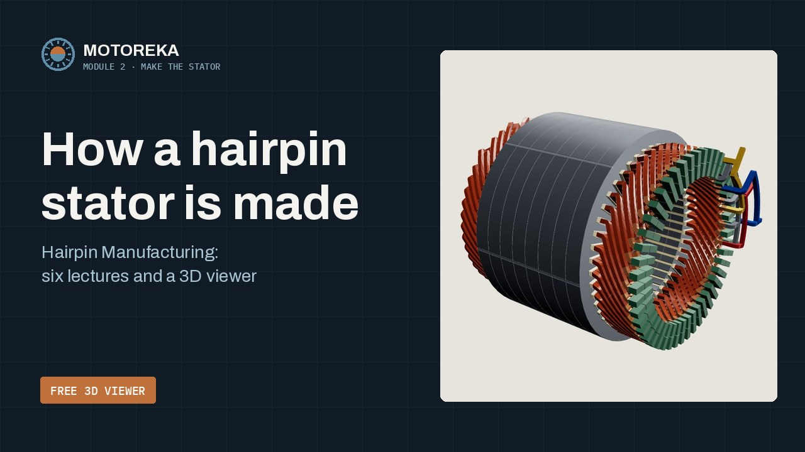
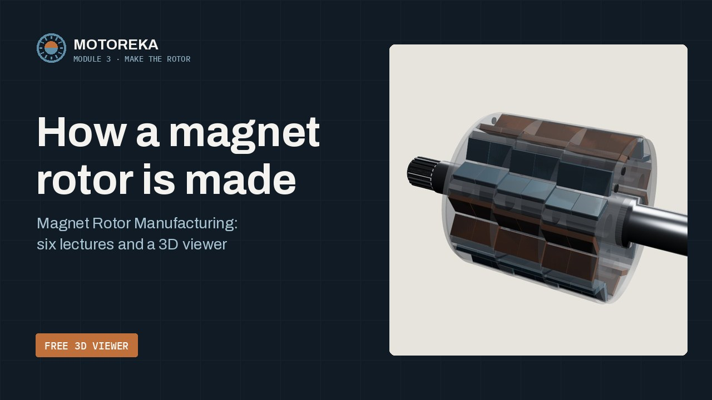

Sizing & Design
Six sessions and a design review: from a vehicle brief to a motor sized, chosen and checked in FEMM.
- Start free
- Sizing Calculator
- Comes with
- The book and the six tools
- Status
- Available
Three modules follow one motor: an 80 kW, 191 N·m traction motor for a B-segment range-extended car. Size it and check it in FEMM, then follow its hairpin stator and its magnet rotor through the factory. Take one module or all three, with your team.
Take the module your team needs, or all three. They follow the same car and the same 48-slot, 8-pole motor, so they also fit together.
Six sessions and a design review: from a vehicle brief to a motor sized, chosen and checked in FEMM.
Six lectures: why hairpins, the winding, the pins, then insert, twist, weld, impregnate and test.
Six lectures: why magnets, the rotor design, from ore to alloy and alloy to magnet, then build and test the rotor.
All three together: the whole EV Traction Motor course, from the vehicle brief to the stator and rotor of a tested motor.
Ask about the whole courseFree and public: one intro video per module, then its free article, viewer or tool.

How to size an EV motor: from the vehicle brief to the motor's rating and size, its topology and materials, and a torque check in FEMM.

Intro video comingHow the motor's hairpin stator is made, from flat copper wire to a tested winding: the winding design, the pins, insert, twist, weld, impregnate and test.

Intro video comingHow the motor's magnet rotor is made, from rare-earth oxide to a magnetised rotor in the stator: the magnets, the rotor design, then stack, insert, fix, skew, balance and magnetise.
The motor is sized for peak torque, but on the test cycle it works almost entirely at light load, where its efficiency sets how much battery and fuel the car must carry.

One free tool from each module, and the book preview. A free account, opening soon, will keep your quiz scores and earn the certificates.
 Module 1 · DesignEV Traction Motor · FreeSizing CalculatorFrom vehicle data to torque, speed and the motor's main dimensions.
Module 1 · DesignEV Traction Motor · FreeSizing CalculatorFrom vehicle data to torque, speed and the motor's main dimensions. Module 2 · StatorEV Traction Motor · FreeHairpin Motor ViewerA hairpin stator in 3D, built step by step, with the article on how it is made.
Module 2 · StatorEV Traction Motor · FreeHairpin Motor ViewerA hairpin stator in 3D, built step by step, with the article on how it is made. Module 3 · RotorEV Traction Motor · FreeMagnet Rotor ViewerA magnet rotor in 3D that you can redesign, built step by step, with the article on how it is made.
Module 3 · RotorEV Traction Motor · FreeMagnet Rotor ViewerA magnet rotor in 3D that you can redesign, built step by step, with the article on how it is made. Module 1 · DesignBook preview · PDF, 34 pagesDesigning an EV Traction MotorThe contents, the running case, Chapter 3 in full and the blank design card.Free
Module 1 · DesignBook preview · PDF, 34 pagesDesigning an EV Traction MotorThe contents, the running case, Chapter 3 in full and the blank design card.Free Module 1 · DesignFree soonTopology Comparator and Materials ExplorerTwo of the course tools, opening as free tasters: compare motor types on the same rating, then choose the steel, magnet and winding.Coming
Module 1 · DesignFree soonTopology Comparator and Materials ExplorerTwo of the course tools, opening as free tasters: compare motor types on the same rating, then choose the steel, magnet and winding.Coming Module 1 · DesignFree soonFEMM Torque LabThe Windows app that builds one pole of your motor in FEMM and reads its torque, voltage limit and ripple.ComingAll modulesFree account · opening soonQuizzes and certificatesThree questions in each manufacturing lecture, 18 per module. Pass all six of a module for its certificate from Motoreka and UMPSA.Opening soon
Module 1 · DesignFree soonFEMM Torque LabThe Windows app that builds one pole of your motor in FEMM and reads its torque, voltage limit and ripple.ComingAll modulesFree account · opening soonQuizzes and certificatesThree questions in each manufacturing lecture, 18 per module. Pass all six of a module for its certificate from Motoreka and UMPSA.Opening soonThe modules for your team, live or in-house, one at a time or all three.
A B-segment range-extended car needs an 80 kW, 191 N·m motor. Module 1 sizes and checks that motor, down to its 48-slot, 8-pole stator. Module 2 follows its hairpin stator through the factory, from flat wire to a tested winding. Module 3 follows its magnet rotor, from rare-earth oxide to a magnetised rotor in the stator. Each module stands on its own.
 Module 2 · StatorHands-on kit · with the module or on its ownHairpin Stator KitBuild a 24-slot hairpin stator from 254 coded printed parts with copper wire inside: insert, twist, weld, connect and test each phase. Try the first three steps in 3D.Preview free
Module 2 · StatorHands-on kit · with the module or on its ownHairpin Stator KitBuild a 24-slot hairpin stator from 254 coded printed parts with copper wire inside: insert, twist, weld, connect and test each phase. Try the first three steps in 3D.Preview free Module 3 · RotorHands-on kit · plannedMagnet Rotor KitA 4-pole interior-magnet rotor with a printed core and ferrite blocks that turns inside the Hairpin Stator Kit: stack, insert, fix, balance, then read each phase's voltage.Planned
Module 3 · RotorHands-on kit · plannedMagnet Rotor KitA 4-pole interior-magnet rotor with a printed core and ferrite blocks that turns inside the Hairpin Stator Kit: stack, insert, fix, balance, then read each phase's voltage.PlannedGo from a vehicle brief to torque, speed and main dimensions, choose the topology and materials, check what the motor asks of the inverter and cooling, and verify it in FEMM.
For engineers who specify, source or design traction motors and must speak the motor designer's language. Groups carry one running case through every session and defend their design at the end.
A textbook route through traction motor design for final-year and master's students: one worked case from the vehicle to the finite-element check, with problems at every chapter.
EMDLab on your motor.
Each tool opens the design card saved by the one before, so your numbers carry from the vehicle to the finite-element check. The Sizing Calculator is free to use now. The other five come with Module 1 and with the book. Click a screenshot to enlarge it.
From the vehicle data and your choices to torque, speed and main dimensions, with every target checked as you type.
Screens eight motor topologies against your rating, with weights and scores you can edit, and shows whether the winner survives other weightings.
Picks the electrical steel, magnet grade and winding, shows the losses and temperature margins, and estimates the material cost.
What the motor asks of the inverter and the cooling: current, fault behaviour, losses, hot spots, noise and rotor stress.
A Windows app that builds one pole of your motor in FEMM and reads its flux linkage, torque, voltage limit and ripple.
Opens up to four design cards side by side against the targets and a reference design, for the design review.
Module 1, the book and the tools follow the same order, so a number found in one carries straight into the next.

Designing an EV Traction Motor: From Vehicle Brief to Finite-Element Validation is the course written out as a design reference. It follows one running case through six parts, and every number in it carries its status label.
| For | Edition | Status |
|---|---|---|
| Everyone | Preview34 pages: the contents, the preface, the running case and data labels, Chapter 3 in full and the blank design card. | Free download |
| Lecturers | Inspection copyThe full book to judge it for a course: view-only, with your name on every page, for a limited time. | On request |
| Course participants | Trainee editionThe full book inside the course site, with the participant's name on every page. | With the course |
| Individual readers | Reader editionThe full book in your own account, with your name on every page, and the companion tools. | In preparation |

Senior Lecturer, Faculty of Manufacturing and Mechatronic Engineering Technology, UMPSA · Head of EMDLab
His research is the design of electric machines for vehicles: synchronous reluctance and PM-assisted synchronous reluctance motors, and hairpin-wound traction motors. The course and the book pass on the method he uses in that work, with the finite-element models built in the open-source FEMM.
Yes. The three modules are offered separately or together: Module 1, Sizing & Design (six sessions and a design review); Module 2, Hairpin Manufacturing (six lectures); Module 3, Magnet Rotor Manufacturing (six lectures). They follow the same running case, so they also fit together.
Sessions S0 to S5 and a design review, the slides and worksheets, all six tools for every participant, and the book in its trainee edition, with the participant's name on every page.
A web browser for the tools. The FEMM Torque Lab runs on Windows with FEMM 4.2, which is free. Nothing else is needed.
Module 1 runs as six sessions, S0 to S5, and a design review in which each group defends its design. Modules 2 and 3 are lecture series with the 3D models, live or recorded. We run them at your site for your team, or at EMDLab, UMPSA.
Module 1: engineers who specify, source, test or design traction motors. Modules 2 and 3: also process, quality and purchasing engineers at motor, stator, rotor and magnet makers and their suppliers. A degree in electrical or mechanical engineering helps; no prior motor design experience is assumed.
Yes, ask us. The method is the same; the inputs change. The standard course uses a B-segment range-extended car.
It is in preparation. Download the free preview now, and leave your email with “The book” to be told when the book is out.
Every number carries a label: Confirmed, Inferred, Training target or Not available. Public benchmark motors carry their sources.
A quote for your team, a place on an open run, the book, an inspection copy, or a question. We reply within one working day.
WhatsApp+60 13-390 2485Fastest for quick questionsEmailmahizami@umpsa.edu.myFor proposals and quotations